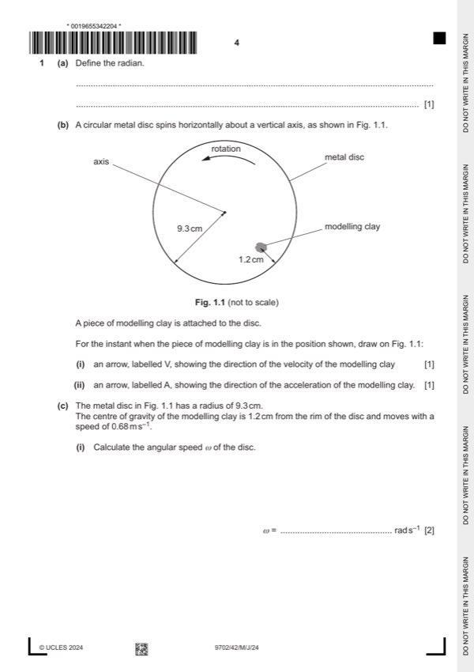

Question 1

Original paper page 4
Part 1(a) — solution
- [B1] Obtain/use: angle (subtended at the centre of a circle) when arc (length) = radius
Mark points
- [B1] Obtain/use: angle (subtended at the centre of a circle) when arc (length) = radius
Part 1(b)(i) — solution
- [B1] Obtain/use: arrow, labelled V, pointing in NE direction
Mark points
- [B1] Obtain/use: arrow, labelled V, pointing in NE direction
Part 1(b)(ii) — solution
- [B1] Obtain/use: arrow, labelled A, pointing in NW direction
Mark points
- [B1] Obtain/use: arrow, labelled A, pointing in NW direction
Part 1(c)(i) — solution
- [A1] Obtain/use: = 0.68 / (0.093 – 0.012)
Mark points
- [A1] Obtain/use: = 0.68 / (0.093 – 0.012)
Part 1(c)(ii) — solution
- [A1] Obtain/use: a = 0.682 / (0.093 – 0.012) or (0.093 – 0.012) 8.42
Mark points
- [A1] Obtain/use: a = 0.682 / (0.093 – 0.012) or (0.093 – 0.012) 8.42
Part 1(d) — solution
- [B1] Obtain/use: angular speed: same for both pieces
- [B1] Obtain/use: linear speed: less for second piece than first piece
- [B1] Obtain/use: acceleration: less for second piece than first piece
Mark points
- [B1] Obtain/use: angular speed: same for both pieces
- [B1] Obtain/use: linear speed: less for second piece than first piece
- [B1] Obtain/use: acceleration: less for second piece than first piece